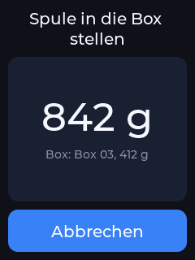
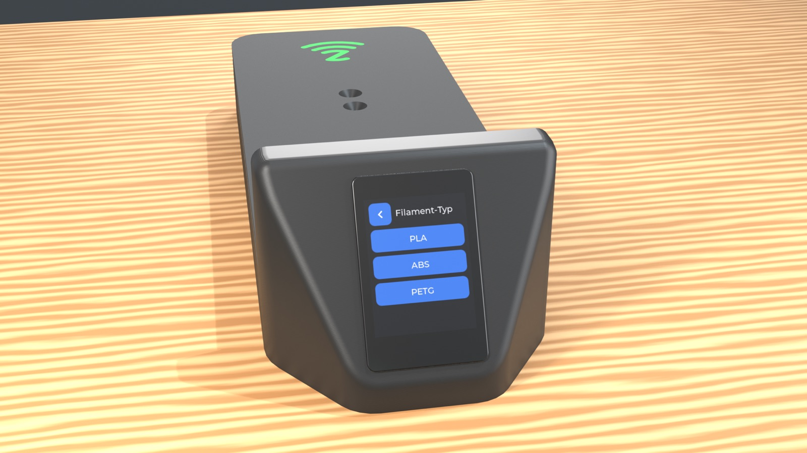

AblaufHow it works
Vom Scan bis zum Eintrag in SpoolmanFrom scan to Spoolman entry
-
 1
1
Spule scannenScan the spool
Spule an die Scan-Zone halten. Die Waage holt Hersteller, Material und letztes Restgewicht aus Spoolman.Hold the spool to the scan zone. The scale loads vendor, material and last remaining weight from Spoolman.
-
 2
2
Box auflegenPlace the box
Die Box hat einen eigenen Tag am Boden. Ihr Name wird in Spoolman zum Lagerort.The box has its own tag on the bottom. Its name becomes the location in Spoolman.
-

3Spule in die BoxSpool into the box
Die Waage wartet, bis der Wert ruhig steht, und nimmt dann die Differenz.The scale waits until the reading settles and then takes the difference.
-
 4
4
BestätigenConfirm
Ergebnis prüfen und speichern. Ist Spoolman nicht erreichbar, wird das Update später gesendet.Check the result and save. If Spoolman is unreachable, the update is sent later.
DifferenzwägungDifferential weighing
Das Gewicht der Box muss niemand kennenNobody needs to know the box weight
Gewogen wird zweimal: die Box allein und die Box mit Spule. Die Differenz ist die volle Spule. Was sonst in der Box liegt, etwa Trockenmittel, fällt dabei heraus. Das Leerspulengewicht kommt aus Spoolman (Spule, Filament oder Hersteller). Fehlt es, gibt man es am Gerät ein.The scale weighs twice: the box alone, then the box with the spool. The difference is the full spool. Anything else in the box, desiccant for example, drops out. The empty spool weight comes from Spoolman (spool, filament or vendor). If it is missing, you enter it on the device.
Liegt das Ergebnis unter −20 g, wird nichts gespeichert. Liegt es deutlich über dem Anfangsgewicht der Spule, warnt die Waage.If the result is below −20 g, nothing is saved. If it is well above the spool’s initial weight, the scale warns you.
| Box mit Spule (2. Wiegung)Box with spool (2nd weighing) | 1254 g | |
| − | Box 03 ohne Spule (1. Wiegung)Box 03 without spool (1st weighing) | 412 g |
| − | LeerspuleEmpty spool | 250 g |
| = | Restgewicht an SpoolmanRemaining weight to Spoolman | 592 g |
Was die Firmware kannWhat the firmware does
FunktionenFeatures
- NFC-TagsNFC tags
- NTAG215/216 im OpenSpool-Format. Spulen-, Box- und Benutzer-Tags lassen sich direkt am Gerät beschreiben.NTAG215/216 in OpenSpool format. Spool, box and user tags can be written on the device.
- Spoolman
- Nutzt die NFC-Tags von Spoolman 0.27. Unbekannte Spulen wählt man aus der Spoolman-Liste, danach ist der Tag verknüpft.Uses the native NFC tags of Spoolman 0.27. Unknown spools are picked from the Spoolman list, after that the tag is linked.
- Offline-WarteschlangeOffline queue
- Bis zu 100 Updates bleiben im Flash, wenn Spoolman nicht antwortet, und werden später gesendet.Up to 100 updates stay in flash while Spoolman does not answer and are sent later.
- BenutzerUsers
- Jeder meldet sich mit seinem Tag an und wird als Besitzer der Spule eingetragen. Einstellungen nur für den Admin.Everyone signs in with their own tag and is recorded as the spool owner. Settings are admin only.
- WeboberflächeWeb interface
- Kalibrierung, Benutzer, Filament-Katalog, Spoolman, WLAN, Log und Systemeinstellungen im Browser.Calibration, users, filament catalog, Spoolman, Wi-Fi, log and system settings in the browser.
- WLAN und UpdatesWi-Fi and updates
- Ohne Zugangsdaten startet ein Hotspot mit Einrichtungsseite. Neue Firmware kommt per WLAN (OTA).Without credentials the scale opens a hotspot with a setup page. New firmware arrives over Wi-Fi (OTA).
Alle Funktionen im DetailAll features in detail · Tag-Format und Spoolman-AnbindungTag format and Spoolman integration
Video
Der Ablauf als AnimationThe flow as an animation
Animiert in Blender, mit den echten Screens der Firmware.Animated in Blender, using the firmware’s real screens.
TeileParts
Hardware
| Board | Waveshare ESP32-S3-Touch-LCD-2 (16 MB Flash, 8 MB PSRAM, 240×320 Touch) |
|---|---|
| WägezelleLoad cell | Biegebalken 5 kg mit HX711 (3,3 V)5 kg bar load cell with HX711 (3.3 V) |
| NFC | PN532 im SPI-ModusPN532 in SPI mode |
| Tags | NTAG215 oder NTAG216, je einer pro Spule, Box und BenutzerNTAG215 or NTAG216, one per spool, box and user |
| GehäuseEnclosure | 3D-gedruckt, Stahl als Ballast im Sockel3D printed, steel ballast in the base |
Verdrahtung, Mechanik und Flashen im BrowserWiring, mechanics and flashing from the browser


Häufige FragenQuestions
Brauche ich Spoolman?Do I need Spoolman?
Ja. Die Waage liest die Spulendaten aus Spoolman und schreibt das Ergebnis dorthin zurück. Ohne Spoolman funktioniert sie nur als normale Waage. Spoolman ist kostenlos und läuft im eigenen Netz.Yes. The scale reads spool data from Spoolman and writes the result back. Without Spoolman it is just a plain scale. Spoolman is free and runs on your own network.
Braucht sie Internet?Does it need internet?
Nein, nur dein WLAN und Spoolman im selben Netz. Die Uhrzeit für die Warteschlange kommt per NTP, ohne Internet steht dort 0.No, only your Wi-Fi and Spoolman on the same network. Queue timestamps come from NTP; without internet they are 0.
Welche Tags brauche ich?Which tags do I need?
NTAG215 oder NTAG216. Die Kapazität liest die Firmware aus dem Tag, beide Typen gehen.NTAG215 or NTAG216. The firmware reads the capacity from the tag, so both work.
Wie genau ist sie?How accurate is it?
Ein Wert gilt als stabil, wenn er sich über etwa eine Sekunde (10 Messungen) um höchstens 1 g bewegt. Die tatsächliche Genauigkeit hängt von Wägezelle, Aufbau und Kalibrierung ab und ist noch nicht gemessen.A reading counts as stable when it moves by at most 1 g over about one second (10 samples). Real accuracy depends on the load cell, the build and calibration, and has not been measured yet.
Kann ich die Firmware ohne Entwicklungsumgebung aufspielen?Can I flash without a toolchain?
Ja, über den Web-Flasher in Chrome oder Edge am Computer.Yes, with the web flasher in Chrome or Edge on a computer.